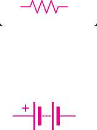

difference (p.d) is the work done in moving a unit charge in a circuit from one point to another. Potential difference (p.d) is also called voltage.
Like the e.m.f., the SI unit for p.d is the volt (V). One volt is equivalent to one joule per coulomb. Figure 2.2 shows a circuit diagram with the dashed box indicating a region where the potential difference between two points of a resistor can be measured.
The difference between e.m.f. and p.d is that e.m.f is the potential difference across the cell terminals when no current flows or no load is connected. In contrast, p.d is measured when current flows through the circuit or when a load is connected. The load here refers to the resistance, R, of the electrical appliance connected to the source of e.m.f. Figure 2.3 shows a circuit with an e.m.f source and a resistor as a load.

Measurement of the e.m.f of a cell and the p.d across a conductor
The e.m.f. of a cell and p.d are measured using a high resistance device called a voltmeter. A voltmeter measures the difference in potential between two points. It is always connected in parallel with the cell or the load because the e.m.f. of a cell is compared to the p.d across the voltmeter’s terminals. To measure e.m.f. and p.d, the positive terminal of the voltmeter is connected to the positive terminal of a cell, and the negative terminal of the voltmeter is connected to the negative terminal of the cell. Note: Measuring e.m.f by a voltmeter only provides an estimated value, since a small amount of current is drawn by the meter contrary to the requirement that no current is drawn for e.m.f measurement. Activity 2.1 will assist on understanding how one can measure of a cell and potential difference of a conductor.

Aim:
To measure the e.m.f. of a cell and the potential difference of a conductor
Materials:
dry cell (1.5 V), voltmeter, bulb, two switches, connecting wires
Procedure
Connect the circuit as shown in Figure 2.4.